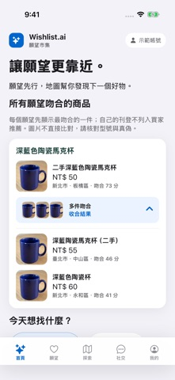
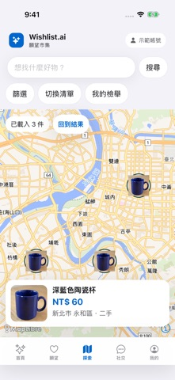
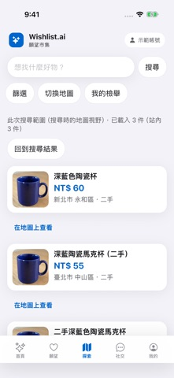

把願望留下來
用照片或文字記錄想要的商品，整理名稱與備註，從願望查看可能吻合的刊登。
WISHLIST.AI · APP INTRODUCTION
把想要，變成遇見。用照片或文字建立願望，探索商品清單與地圖，透過聊天確認好物與面交。
前往 Wishlist.ai 官方網站 ↗介紹更新：2026-11-02 · Android／iOS 是否可下載，以上方實際商店狀態為準。
現行 Wishlist.ai 結合願望、二手商品探索、AI 輔助整理及站內聊天；不是早期以朋友送禮清單為主的 Weesh 介紹。
用照片或文字記錄想要的商品，整理名稱與備註，從願望查看可能吻合的刊登。
依商品、分類與條件探索好物，在清單與地圖間切換；展開地圖上的商品縮圖查看細節。
查看參考原價與折數資訊，並打開來源核對。參考價格不是保證售價，也不代表商品真偽已驗證。
連續拍照建立商品草稿，核對 AI 建議資訊，再自行設定價格、日期與刊登內容。
透過商品聊天補充照片、確認商品狀況與面交安排；公開賣場及驗證狀態供聯繫時參考。
針對外部來源商品提出問題，查看代轉狀態與回覆。代問不是下訂或付款，也不保證賣家回覆。
透過正式網站、Android 或 iOS 使用服務。功能與登入條件以各平台目前介面為準。
以下為 App Store 2.0.20 目前公開的四張展示圖，維持商店原始比例；畫面內的範例商品不是即時庫存。



辨識、分類、估價與參考原價都只是輔助。刊登、購買或面交前，請自行確認照片、型號、商品狀況與來源。
詢問中與喜歡人數反映站內活動，不保證排隊、保留或成交；聯繫與交易安排仍以雙方確認為準。